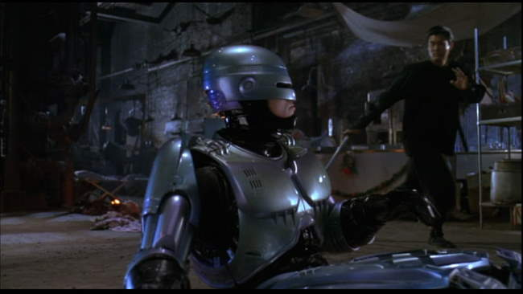
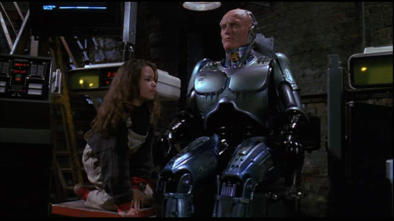
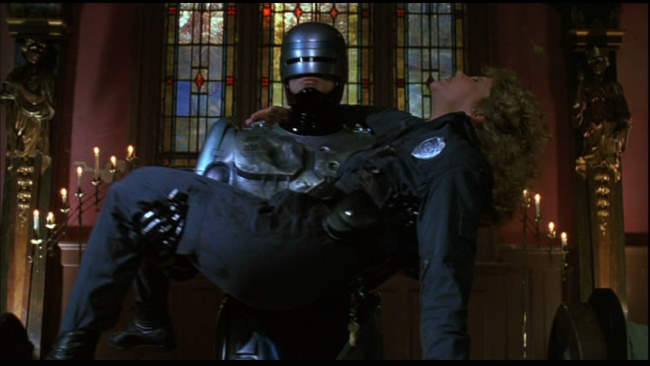

Movie review by : SFAM
Year : 1993
Directed by : Fred Dekker
Written by : Frank Miller & Fred Dekker
Degree of Cyberpunk visuals : Medium
Correlation to Cyberpunk themes : Low
Rating : 3/10
Key cast members :

Overview: The first Robocop movie was an absolutely terrific, innovative flick. Robocop 2 really sucked, but not as bad as Robocop 3. All pretense of putting together a decent movie goes away in Robocop 3. Peter Weller, who plays Robocop in the first two movies wisely skipped this piece of shit. The only remaining cast members from the first are the Police Captain, Officer Lewis (Nancy Allen), the stooge corporate dude, Johnson (Felton Perry). Of these, only Officer Lewis had any chance of carrying a decent amount of heft for the show, but she is prematurely bumped off without reason, and the other two are pretty much just caricatures of themselves. In short, Robocop 3 is a pure, low-budget trashy sellout made for 8-14 year-olds who were familiar with the G-rated series - the plot goes for the young genius hacker kid and ninja bad guy vice attempting to work up a real plot.

The Story: Like Robocop 2, OCP is still trying to create a massively expensive city in a place that only has the destitute poor. God knows why, as nobody will be able to afford ANYTHING created, but we're just supposed to go with it. In this episode, we have the nasty Japanese buying up OCP and hiring a cheesy security firm to simply gather up all the poor people and ship them out to concentration camps. But Robocop doesn't like this, and decides he no longer feels like obeying his prime directive that stops him from challenging OCP employees. Instead, he joins a ragtag resistance comprised of local yokels, the genius kid, and of course his sympathetic OCP scientist care taker. But wait! There's more! The evil Japanese have sent a cyborg ninja to kill Robocop. Ohhhhhhh ? you can just cut the tension with a plastic spoon!

The Bottom Line: Honestly, I have a hard time seeing how Frank Miller is in any way responsible for the screenplay for this piece of trash. It's pretty sad to see the Robocop movies end in such a trashy way. Yes, there is another kiddie miniseries that follows this, but truly, Robocop should have stopped after the first. This franchise is the poster child for Hollywood fuckups. In thinking about it, they could have done quite a lot with the Robocop universe, and potentially even could have done interesting things with the original Robocop character. Instead, they choose the cheesy derivative path. This led to both less money and the painful death of the cash cow.